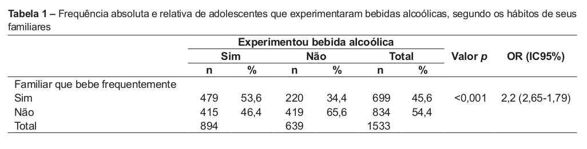
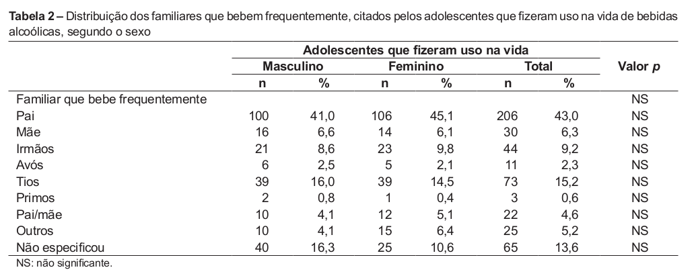
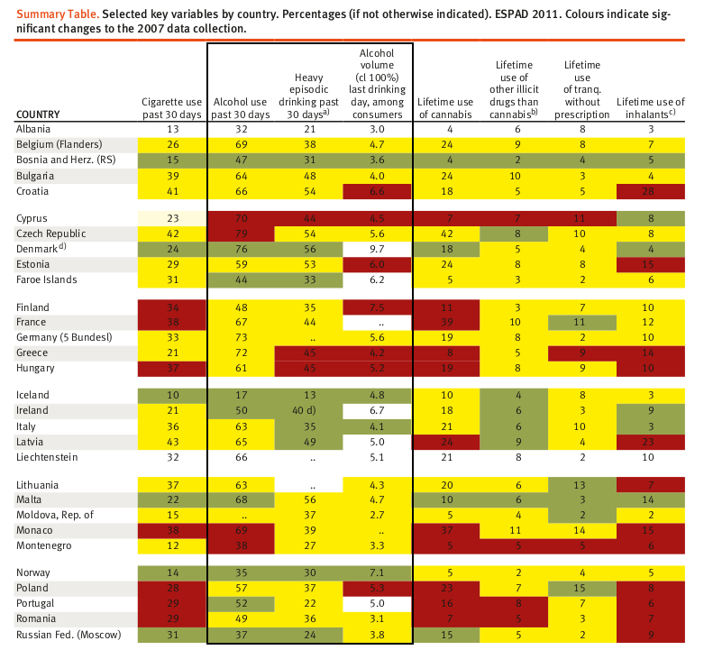
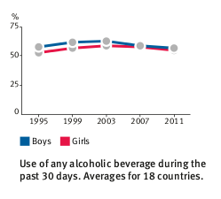
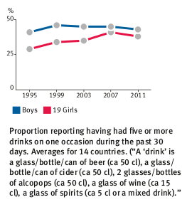
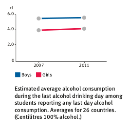
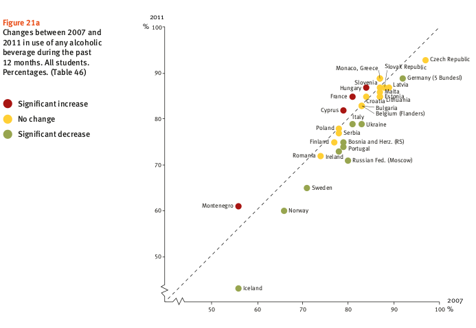
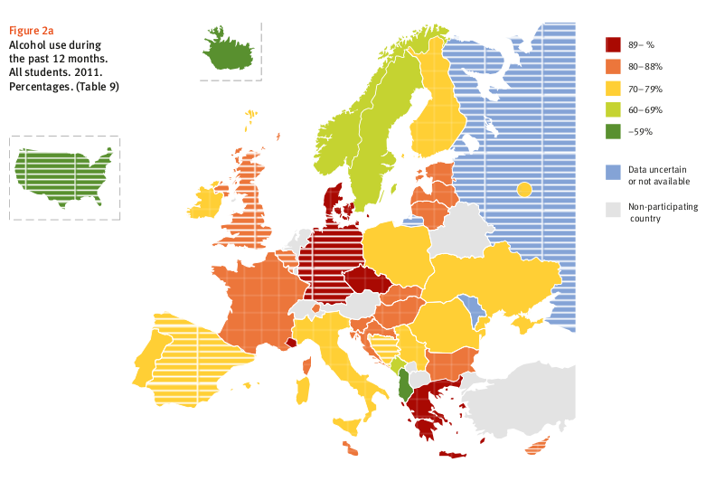
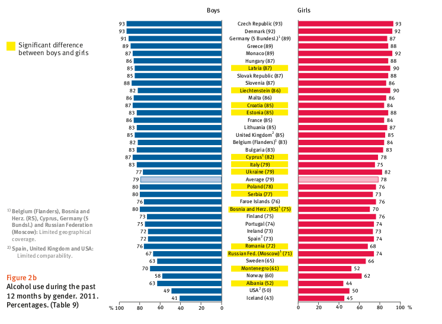
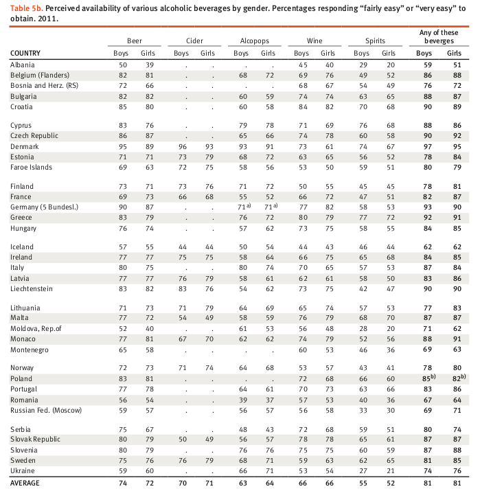

procurar dados estatíscos que respondam ou se adequem a essas questões ( parcial ou integralmente)
preferencialmente, consulta de 2 bases de dados diferentes
justificar a escolha das bases de dados consultadas
justificar pertinência da tabela de gráfico
5 dados estatísticos no total
Questão científica de desenvolvimento:
Em média, qual é a idade em que se inicia o consumo de álcool?
Nota: Por ser uma questão que abarca vários factores causais e pelo reduzido nº de elementos existentes no grupo foi nos permitido desenvolver apenas uma questão, onde sejam abordados alguns dos inerentes componentes da sua complexa magnitude científica:
- socio-económicos, influência familiar e ambiente social;
- comparação estatística entre países da UE;
Factores socio-económicos, familiares e de ambiente social
Embora nem sempre seja muito claro o mecanismo de causa do consumo de álcool e os seus problemas relacionados, é já tradicional apontar-se uma relação recíproca de causa-efeito entre alcoolismo e perturbações no Lar e Família, no Trabalho e na Sociedade em geral.
Esta secção fundamenta-se em dois estudos:
1- (Desvantagem socio-económica, etnicidade
e consumo de álcool na adolescência) relativamente recente, que visa compreender e caracterizar o
consumo de álcool nos adolescentes migrantes, através
da perspectiva dos jovens face aos factores ligados à
protecção e ao risco e aos cenários que envolvem o
adolescente. Foi efectuada uma
análise de conteúdo, e são apresentados em alguns trechos o
discurso dos participantes.
No estudo os factores mais enunciados pelos jovens em
relação aos seus cenários e que surgem associados
ao consumo de álcool, ligados ao risco ou à protecção,
foram:
a fraca supervisão parental;
o fraco envolvimento escolar;
a insegurança;
exclusão e discriminação por parte dos professores e colegas, pelo factos de morarem em bairros sociais;
"Sentimo-nos discriminados na escola por sermos do Bairro."
As expectativas dos jovens face ao futuro são vagas
e repletas de insegurança, económica e emocional.
Em relação ao consumo de álcool:
a maioria dos jovens consome-o e já ficou embriagado;
salientam que beber facilita as relações interpessoais, nomeadamente com o par sexual, ficam mais descontraídos...
“é para ficar bem, fica-se melhor”
Percepcionam uma grande acessibilidade ao consumo de álcool na comunidade.
Este 1º estudo conclui que:
A supervisão e a comunicação parental, o sentimento
de apoio pelos colegas e professores, e o suporte
social percebido, o envolvimento escolar e as expectativas futuras são factores importantes no comportamento de consumo de álcool.
As condições habitacionais e sociais dos bairros de alojamento promovem um aumento dos problemas sociais e de saúde de um modo geral, da probreza, da discriminação e da exclusão social.
Assim a percepção do ambiente social e do controlo
pessoal são factores preditores de comportamentos
desajustados, nomeadamente o abuso de álcool e
outras substâncias, comportamentos de violência
e fraca competência no controlo emocional.
A população retratada neste estudo foi composta por
1.533 adolescentes, sendo 799 (52%) do sexo masculino.
A média de idade para iniciação do álcool foi 12,1±1,9 anos
(variação: 3-20) .
A maioria dos alunos (78%) encontrava-se na faixa
etária entre os 12 e 16 anos.
Em relação ao estado civil, 98%
eram solteiros.


Este 2º estudo conclui que:
Os dados demonstraram que 66% dos adolescentes que não experimentaram bebidas alcoólicas não possuem familiares que bebem frequentemente.
O ambiente familiar induz e facilita o uso de
álcool por adolescentes.
a maioria desses jovens vive num
ambiente familiar desfavorecido, com condições socioeconómicas inapropriadas para prover um meio adequado ao
desenvolvimento biopsicossocial do indivíduo.
Comparação estatística entre países
Nesta secção a nossa informação baseia-se essencialmente sobre o projeto europeu de inquéritos escolares sobre o álcool e outras drogas (ESPAD 2011), cujo objectivo é recolher dados comparáveis sobre o consumo de substâncias entre os alunos europeus dos 15 aos 16 anos, a fim de acompanhar as tendências em cada um dos países e entre eles.
Em Portugal, o estudo foi apoiado pelo Instituto da Droga e da Toxicodependência (IDT)/Ministério da Saúde e Ministério da Educação. (notícia)
Em todos os países participantes no ESPAD, com
exceção da Islândia, pelo menos 70 % dos alunos
ingeriram álcool pelo menos uma vez ao longo da
vida, sendo a média de 87 % no inquérito de 2011.
Os valores médios dos últimos 12 meses e nos últimos
30 dias são, respetivamente, de 79 % e 57 %.
Não existe um padrão geográfico claro, mas é
sobretudo entre os países nórdicos e dos Balcãs que
se encontram percentagens de consumidores
relativamente reduzidas.
Os valores nacionais médios relativos às prevalências
ao longo da vida, nos últimos 12 meses e nos últimos
30 dias são praticamente idênticos para rapazes e
raparigas. Contudo, quando existem diferenças, a
prevalência é quase sempre mais elevada entre os
rapazes.
Entre os alunos que indicaram as quantidades das
várias bebidas que consumiram, no último dia em que
ingeriram álcool, verificou‐se uma diferença entre os
géneros no que respeita ao consumo médio estimado,
sendo que os rapazes beberam mais um terço do que
as raparigas (em 2011, uma média de 5,8 contra 4,3
centilitros de álcool a 100 %).
Na grande maioria dos
países, a bebida dominante entre os rapazes é a
cerveja e, em pouco mais de metade dos países, para
as raparigas são as bebidas destiladas. Em média,
estes dois tipos de bebida representam, no seu
conjunto, cerca de 70 % do consumo total da
população estudantil.








Outras pesquisas relevantes para o desenvolvimento da questão
Neste texto o tema é baseado na violência física entre pessoas e qual a frequência com que acontece dependendo de estar ou não sob o efeito do álcool, assim como vários estudos, como por exemplo, estatísticas referentes ao número de mortes devido ao consumo de álcool nos jovens entre os 15 e os 29 anos de idade.
Assim sendo, mesmo não estando directamente focado no nosso tema, podemos obter informações úteis para a nossa pesquisa neste texto através dos vários estudos estatísticos mencionados no mesmo.
Neste texto fala-se sobre vários temas relacionados com o álcool, entre os quais, álcool e jovens, idade minima para comprar bebidas alcoólicas, que são dois tópicos directamente relacionados com o nosso tema, dos quais conseguimos extrair bastante informação para a nossa pesquisa.
Neste texto existem vários tipos de inquéritos sobre o consumo de álcool e consumo de outras drogas, tendo estes inquéritos questões pertinentes e apresentando respostas à nossa questão, foi um dos selecionados.
Referências
Referências socio-económicas, familiares e ambiente-social
justificação da escolha das bases de dados consultadas
As bases de dados consultadas foram:
Scielo - Scientific Electronic Library Online
IDT - Instituto nacional da droga e da Toxicodependência
OEDT - Observatório Europeu da Droga e da Toxicodependência
WHO - world health organization
A escolha foi deduzida com base, não no número, mas na qualidade da informação dos resultados retornados.
Apesar de estarmos cientes que o campo da estatística pode ser facilmente manipulado para induzir em erro quem, de modo alheio, interpreta os dados, confiamos nas fontes das mesmas.
justificação de pertinência da tabela de gráfico
Os gráficos e as tabelas foram um método bastante pertinente na interpretação dos factos, pois transmitem os dados eficaz e objectivamente, através do qual conseguimos percepcionar os dados de uma forma mais clara e objectiva.
Apêndice
informação extra:
Documentário educativo sobre a investigação das verdadeiras causas dos vários problemas sociais existentes na sociedade a nível global.